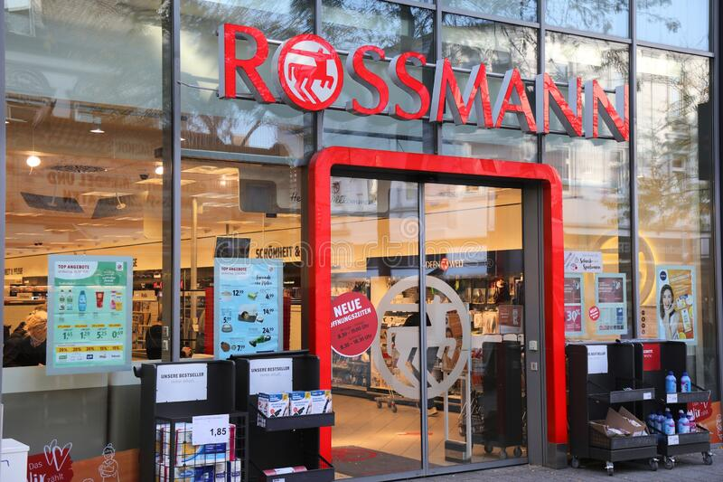
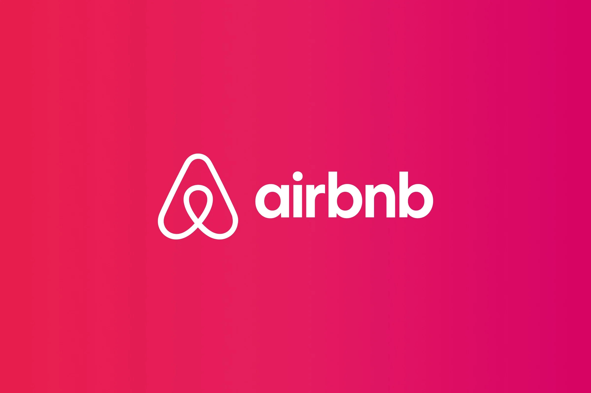

Programming Languages and Databases
- Python.
- SQL for data extraction.
- PostgreSQL and SQLite Databases.
I am a Data Professional with a strong background in Data Analytics, Machine Learning, and Data Engineering. My expertise lies in building scalable web-scraping architectures, designing automated data pipelines, and deploying advanced Machine Learning models to solve complex operational challenges.
I specialize in transforming unstructured, dynamic data environments into robust SQL structures, optimizing predictive modeling frameworks, and developing end-to-end analytics systems that directly impact business decision-making.
2. Your Tech Stack Matrix Bruno organizes his skills beautifully. You can adjust the bullet points in hisThe Business Problem: Extracting dynamic, high-volume e-commerce data consistently without breaking due to frequent frontend changes and structural target layout shifts.
The Solution: Built a robust Python data pipeline utilizing Selectorlib YAML parsing configurations to dynamically isolate data elements. Developed error-handling features to maintain pipeline stability, feeding structured data directly into an optimized SQL relational database.
Tools and Techniques Used: Python, SQL, Selectorlib, Beautiful Soup, Relational Schema Design, Data Architecture, Version Control.
Project 2: Advanced Machine Learning & Optimization Framework (If you want to display an interactive model or dashboard here, you can link it exactly like Bruno links his Streamlit apps.) HTMLThe Business Problem: Building scalable, high-accuracy predictive frameworks that validate real-world scenarios while minimizing model drift and optimizing performance metrics.
The Solution: Developed an end-to-end machine learning solution utilizing ensemble methods (XGBoost/Scikit-Learn). Integrated clean feature selection, robust cross-validation, and deployed the final interface as an interactive web dashboard for real-time inference.
Tools and Techniques Used: Python, Pandas, Scikit-Learn, XGBoost, Streamlit Cloud, Cross-Validation, Model Evaluation.
* View Live Interactive Dashboard | * View Source Code
Step 4: Save and Deploy Once you've replaced the text inside index.html: Scroll down to the bottom of the page. Click the green Commit changes... button. Refresh your website URL ([https://yourusername.github.io](https://yourusername.github.io)). Your portfolio will instantly refresh with Bruno's ultra-clean layout, completely personalized to your project history and technical background! Would you like to tweak the wording of either of these project descriptions before you commit them to the live site? Step 1: Create Your GitHub Repository Log into your GitHub account. Create a new repository by clicking the New button. Crucial Step: Name the repository exactly: yourusername.github.io (replace yourusername with your actual GitHub username). Set the repository to Public and check the box to Add a README.md file., here while naming repository owner section already contains my usernam, so in reporitory name part should i just put github.io, or entire username.github.io? In the repository name box, you need to type the entire username.github.io. Even though your owner name is already visible right next to it, GitHub needs the actual name of the project folder to match that exact string to trigger the free website hosting. So, for example, if your GitHub username is nitin-repo, the setup should look exactly like this: Owner: nitin-repo Repository name: nitin-repo.github.io Once it's created, the full URL path will look like nitin-repo/nitin-repo.github.io, which tells GitHub, "Ah, this is a personal homepage, make it live at https://nitin-repo.github.io!" do i have to put my username only, or can i just put my name nad name project folder same, my username is nitintiwari1305, can i put nitintiwari.github.io and name project folder same It must match your exact username—so it has to be nitintiwari1305.github.io. GitHub's free hosting system is hardcoded with a strict rule: for a personal portfolio website, the repository name must match your exact account username. If you name it nitintiwari.github.io, GitHub won't recognize it as your primary user site, and it won't deploy automatically to the clean root URL. Here is what you should do: The Best Setup Repository Name: nitintiwari1305.github.io Your Live Website URL will be: [https://nitintiwari1305.github.io](https://nitintiwari1305.github.io) Don't worry about the number in the URL! Once a recruiter or hiring manager clicks the link from your resume, they don't care if there's a number in the URL. What they will see is the clean layout, your professional title, and your projects. Inside the website itself (in the text and headings), you can display your clean professional name (Nitin Tiwari) perfectly. Go ahead and name it nitintiwari1305.github.io to get the hosting working smoothly! Let me know when you've created it so we can jump to the next step. what to put in description For the Description box on GitHub (right under the repository name), keep it short, professional, and optimized with keywords. This helps recruiters who browse GitHub quickly understand exactly what they are looking at. Here are a few great options you can copy and paste: Option 1: Clean & Professional (Recommended) Data Science & Machine Learning Portfolio | Portfolio website showcasing machine learning systems, data engineering pipelines, and analytics solutions. Option 2: Engineering-Focused ML Engineer & Data Scientist Portfolio | Production-ready ML frameworks, automated web scraping data pipelines, and interactive dashboards. Option 3: Ultra-Minimalist Personal Portfolio Website - Nitin Tiwari (Data Science & ML Engineering) One quick detail before you hit create: You can leave the description blank for now if you want, as you can always change or add it later with a single click on your repository's main page. Make sure the box for Public is selected, check Add a README.md file, and you are ready to click Create repository! Let me know when it's ready. its done now whats step 2 Awesome! Now that your repository nitintiwari1305.github.io is created with a README.md file, we are ready for Step 2: Getting Bruno's layout into your repository. Because your repository already exists and contains a file, we can't use the standard "Fork" button directly (as that creates a new repo instead of putting the files into the one you just made). Instead, we will use a incredibly quick and clean trick right inside the browser to copy his files into yours. Step 2: Copying the Template Files Open a new browser tab and go to Bruno's project code page: [https://github.com/brunodifranco/data-science-portfolio](https://github.com/brunodifranco/data-science-portfolio) Look for the green Code button on his page, click it, and select Download ZIP. Save this small file to your computer and unzip/extract it. Now, go back to your own repository tab ([https://github.com/nitintiwari1305/nitintiwari1305.github.io](https://github.com/nitintiwari1305/nitintiwari1305.github.io)). Click the Add file button near the top right of your file list and select Upload files. Open the unzipped folder on your computer. Select everything inside it (you should see files like index.html, a css folder, an img folder, etc.) and drag and drop them directly into the upload box on your GitHub page. Scroll down to the bottom of the page, type a commit message like Add portfolio template files, and click the green Commit changes button. (Note: If his repository doesn't let you download it directly, just let me know and I will give you the raw, clean structural code to paste right into your browser!) Step 3: Turn on GitHub Pages Now we tell GitHub to turn those files into a live website: Click on the Settings tab (the gear icon at the top of your repository page). Look at the left-hand sidebar, scroll down to the "Code and automation" section, and click on Pages. Under Build and deployment: Source: Leave it as Deploy from a branch. Branch: Change it from None to main (or master, whichever is showing). Folder: Leave it as /(root). Click the Save button. Give GitHub about 60 seconds to compile your site. Once it finishes, a box will appear at the top of that Pages screen saying: "Your site is live at https://nitintiwari1305.github.io/". Let me know once the files are uploaded and you've saved the Pages setting, and we will open index.html to start pasting in your professional profile text! should i upload directly by add file in https://github.com/NitinTiwari1305/NitinTiwari1305.github.io repository or make another to upload file like bruno has done https://github.com/brunodifranco/data-science-portfolio Upload them directly using the Add file button right inside your NitinTiwari1305.github.io repository. Do not make a separate repository like Bruno did. Here is why: Bruno created a repository named data-science-portfolio. Because of that, his website URL has an extra folder extension at the end (brunodifranco.github.io/data-science-portfolio/). Since you named your repository exactly NitinTiwari1305.github.io, you have unlocked the premium "root" URL setup. By dropping the files directly into this repository, your website URL will be incredibly clean, short, and professional: [https://nitintiwari1305.github.io/](https://nitintiwari1305.github.io/) There will be no extra text or trailing slash folders after your name, which looks fantastic on a resume. Quick Reminder for Uploading: When you click Add file → Upload files, make sure you are dropping the contents of Bruno's unzipped folder (the individual files like index.html, css folder, etc.) straight into the root, rather than uploading the single master folder itself. Go ahead and drop them in, commit the changes, and let me know when they are sitting in your repository! done, now bruno's portfolio shows when i open nitintiwari1305.github.io That is exactly what we want! It means your hosting is perfectly configured and your site is officially live to the public. Now comes the fun part: swapping out Bruno's information with your own professional profile and engineering projects. We can do this entirely inside your browser on GitHub. How to Edit Your Website Files Go to your repository on GitHub: [https://github.com/NitinTiwari1305/NitinTiwari1305.github.io](https://github.com/NitinTiwari1305/NitinTiwari1305.github.io) Click on the file named index.html to open it. In the top-right corner of the file view, click the pencil icon (Edit this file). Now you are in the editor. Scroll through the code to find the text lines you want to change, overwrite them with your text, and save. Let's break down the exact blocks of code to replace so your portfolio looks sharp and aligned with your actual data analytics and machine learning experience. The Code Blocks to Replace 1. The Header Titles (Lines ~10–15) Look near the top of the file for the header tags (I am a Data Professional specializing in Data Analytics, Machine Learning, and Data Engineering. My expertise lies in building scalable web-scraping architectures, designing automated data pipelines, and developing machine learning models to solve complex operational challenges.
I focus on transforming unstructured, dynamic data environments into robust relational database structures, optimizing predictive frameworks, and creating end-to-end analytics systems that directly drive business insights.
4. Your Technical Skills Matrix Bruno has a clean list for his skills. Swap his bullet points out for your core tech stack: HTMLThe Business Problem: Extracting dynamic, high-volume product data consistently without pipeline breaks caused by frequent frontend target layout shifts.
The Solution: Constructed a robust Python-based data extraction pipeline using custom Selectorlib YAML configurations to isolate elements dynamically. Developed modular exception handling to ensure pipeline continuity, funneling structured data directly into an optimized SQL relational architecture.
Tools Used: Python, SQL, Selectorlib, Beautiful Soup, Relational Database Design, Version Control.
Project 2: Advanced Machine Learning & Predictive Modeling Hub HTMLThe Business Problem: Creating high-accuracy, scalable predictive frameworks that effectively handle complex feature sets while maintaining model generalizability.
The Solution: Engineered end-to-end machine learning workflows utilizing ensemble methods like XGBoost and Scikit-Learn. Implemented robust cross-validation strategies, statistical evaluation matrices, and deployed interactive dashboard interfaces for seamless model interaction.
Tools Used: Python, Pandas, Scikit-Learn, XGBoost, Streamlit Cloud, Cross-Validation, Model Evaluation.
Step 3: Saving Your Changes Once you are done replacing the text blocks inside the editor: Scroll all the way down to the bottom of the page. Look for the box that says Commit changes... Click the green Commit changes button. Give GitHub about 30–60 seconds to rebuild the site. Open [https://nitintiwari1305.github.io](https://nitintiwari1305.github.io) in a new tab (or hard refresh using Ctrl + F5), and your personalized portfolio will be live! Go ahead and try updating the text. Let me know if any of the HTML formatting looks tricky while you're editing! i'll paste entire index here, dont make changes yet, first tell me everything we need to change,I graduated in Economics from Universidade Federal do Rio Grande do Sul (UFRGS) in June 2022, and I am currently seeking new opportunities in the field of Data. Most recently, I worked as a Data Scientist at a data consulting company. In this role, I was involved in Data Science projects for several companies, performing tasks ranging from data cleaning and exploratory analysis to the implementation of Machine Learning models. These efforts aimed to deliver high- quality results in the projects. I also have some personal projects, which you can find at the "Data Science Projects" section.

In this project I used Python, Flask and Regression Algorithms to predict Rossmann sales, a drug store chain, six weeks in advance. Reason being Rossmann CEO needs to determine the best resource allocation for each store renovation. The final solution is a Telegram Bot that returns a sales prediction of any given available store number, with the possibility of being accessed from anywhere.
In this project I used Python, Power BI and Clustering Algorithms to create a customer loyalty program for Outleto, a fictitious outlet company that sells its products through an E-commerce platform. Outleto's Marketing Team wishes to launch a customer loyalty program, dividing the 5,702 customers in clusters, on which the best customers will be placed in a cluster named Insiders. To achieve this goal, the Data Science Team was requested to provide a business report regarding the clusters, as well as a list of customers that will participate in Insiders. With that report the Marketing Team will promote actions to each cluster, in order to increase revenue. This project's Data Science Product is the final business report built in Power BI, by using Render Cloud and Google Drive.
In this Learning to Rank project I used Python, Flask and Classification Algorithms to create a client ranking system for Insuricare, a fictitious insurance company that is willing to sell a new vehicle insurance to new clients. The reason for ranking is to determine which customers to prioritize, given a limit call restriction. Insuricare already had a model that randomly selected customers to call, however, by using Data Science a full list of customers sorted by propensity score was provided, and for future clients a spreadsheet is available, returning the sorted propensity score for each requested client. Financially, with a very reasonable annual premium this solution could bring Insuricare up to US$ 25 million annually, which is around 89% better than Insuricare's original model.
In this insights project I used Python and Streamlit to solve a profit maximization problem for House Rocket, a fictitious real estate company, by suggesting whether a property should or shouldn't be bought and resold. If this feasible solution strategy were applied the total obtained profit would be around US$ 473 million, with an average profit of 45 thousand dollars per property.

In this project I used Python, Flask, Streamlit and Classification Algorithms to make predictions of the five most likely countries for an Airbnb USA user to make their next booking. The company provided data from over 200 thousand users and required predictions for another 61 thousand users, on which there were 12 possible destinations outcomes. The final product is a Streamlit App that displays a table of these 61 thousand users with their respective predictions, as well as graphical analysis of the predictions by age, gender and overall analysis. In addition to that, a Flask App was built for when new data comes in, as we can get new predictions with a click of a button, so it can be later retrieved by the Streamlit App, because both Streamlit and Flask applications are connected by the same PostgreSQL Database.
In this data engineering project I used Python, Web Scraping and PostgresSQL to create an ETL process for Star Jeans, a fictitious company. Star Jeans' owners have just recently started the company, and for now, their plan is to sell male jeans in the USA through an E-commerce. However, this market already has strong competitors, such as H&M for instance. In addition to that, the owners aren't familiar with this segment in particular. Therefore, in order to better understand how this market works they hired a Data Science/Engineering to gather information regarding H&M. The built solution is an ETL that extracts data from H&M website, cleans it, and saves it to a PostgreSQL database on a weekly basis. Then, it adds and displays the data with filters in a Streamlit App, where it can be accessed from anywhere by Star Jeans' owners.
Feel free to get in touch.
, and
I am a Data Scientist and Machine Learning Engineer focused on transforming raw, dynamic data environments into robust production-ready pipelines and optimized predictive architectures. With a professional background working in technical consulting environments, I specialize in navigating complex systems ranging from end-to-end automated web scraping solutions to advanced analytics frameworks. My work emphasizes scalability, statistical validation, and translating algorithmic performance metrics directly into measurable business impact.
In this project I used Python, Flask and Regression Algorithms to predict Rossmann sales, a drug store chain, six weeks in advance. Reason being Rossmann CEO needs to determine the best resource allocation for each store renovation. The final solution is a Telegram Bot that returns a sales prediction of any given available store number, with the possibility of being accessed from anywhere.
In this project I used Python, Power BI and Clustering Algorithms to create a customer loyalty program for Outleto, a fictitious outlet company that sells its products through an E-commerce platform. Outleto's Marketing Team wishes to launch a customer loyalty program, dividing the 5,702 customers in clusters, on which the best customers will be placed in a cluster named Insiders. To achieve this goal, the Data Science Team was requested to provide a business report regarding the clusters, as well as a list of customers that will participate in Insiders. With that report the Marketing Team will promote actions to each cluster, in order to increase revenue. This project's Data Science Product is the final business report built in Power BI, by using Render Cloud and Google Drive.
In this Learning to Rank project I used Python, Flask and Classification Algorithms to create a client ranking system for Insuricare, a fictitious insurance company that is willing to sell a new vehicle insurance to new clients. The reason for ranking is to determine which customers to prioritize, given a limit call restriction. Insuricare already had a model that randomly selected customers to call, however, by using Data Science a full list of customers sorted by propensity score was provided, and for future clients a spreadsheet is available, returning the sorted propensity score for each requested client. Financially, with a very reasonable annual premium this solution could bring Insuricare up to US$ 25 million annually, which is around 89% better than Insuricare's original model.
In this insights project I used Python and Streamlit to solve a profit maximization problem for House Rocket, a fictitious real estate company, by suggesting whether a property should or shouldn't be bought and resold. If this feasible solution strategy were applied the total obtained profit would be around US$ 473 million, with an average profit of 45 thousand dollars per property.
In this project I used Python, Flask, Streamlit and Classification Algorithms to make predictions of the five most likely countries for an Airbnb USA user to make their next booking. The company provided data from over 200 thousand users and required predictions for another 61 thousand users, on which there were 12 possible destinations outcomes. The final product is a Streamlit App that displays a table of these 61 thousand users with their respective predictions, as well as graphical analysis of the predictions by age, gender and overall analysis. In addition to that, a Flask App was built for when new data comes in, as we can get new predictions with a click of a button, so it can be later retrieved by the Streamlit App, because both Streamlit and Flask applications are connected by the same PostgreSQL Database.
In this data engineering project I used Python, Web Scraping and PostgresSQL to create an ETL process for Star Jeans, a fictitious company. Star Jeans' owners have just recently started the company, and for now, their plan is to sell male jeans in the USA through an E-commerce. However, this market already has strong competitors, such as H&M for instance. In addition to that, the owners aren't familiar with this segment in particular. Therefore, in order to better understand how this market works they hired a Data Science/Engineering to gather information regarding H&M. The built solution is an ETL that extracts data from H&M website, cleans it, and saves it to a PostgreSQL database on a weekly basis. Then, it adds and displays the data with filters in a Streamlit App, where it can be accessed from anywhere by Star Jeans' owners.
Feel free to get in touch.